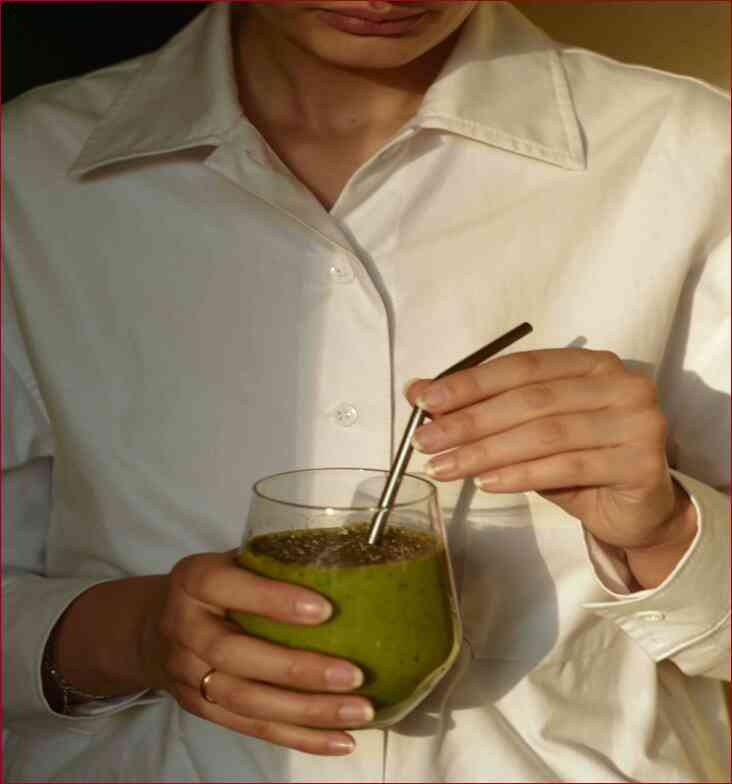

Cele mai bune exercitii cardio care le puteți face la domiciliu, exercitii Cardio consolida inima, vasele de sange si a plamanilor, creste rezistenta, pentru a îmbunătăți metabolismul și de a face corpul subțire și frumos.Efectuarea de exerciții cardio este mult mai accesibil decât ești tu crezi. Nu trebuie să te duci la sală pentru a obține de înaltă calitate și eficiente de formare cardio. Acesta poate fi făcut acasă, în curte, în Parc, și chiar pe stradă. Aici sunt unele exerciții cardio, care sunt potrivite pentru acest lucru.Mersul pe jos sau alergatul pe scări.Du-te în jos pe scări de mai multe ori.Aceasta vă ajută să construi muschii.Am nu vreau să fug de lângă foc, pentru că ea devine în mod. Dar, dacă scările sunt prea abrupte, în cazul în care greutatea este prea mult pentru inima, dacă corpul este în imposibilitatea de a recupera de la inițială de sarcini, atunci acesta va fi, desigur, în cele din urmă să renunțe. Încercați să meargă într-un ritm moderat. Urca la primul pas de pe scări.Pentru acest exercițiu, aveți nevoie pentru a coborî de aproximativ 15 ori, într-o singură ședință, încet. 5 minute este suficient.Urca pe a doua și a treia terenuri.Ideea de bază. În primele 20 de minute, nu se poate merge mai mult de 5-10 pași. După aceea, puteți merge mai departe. Urca ultimele trepte de scari.4 remedii naturale pentru varice.Push-UP-uri.Pentru acest exercițiu, aveți nevoie pentru a împinge în sus pe trepte. Este foarte important ca inima este capabil să facă față cu inițială de sarcini. După primul push-up, organismul trebuie să facă o alegere: pentru plămâni, unele forțat negative e-mail-uri, sau pentru muschii, o mulțime de muncă grea.Exerciții pentru a arde grasimea de pe abdomen.Pentru acoperișuri.Acest exercițiu este bun pentru trunchi și brațe, dar pentru stomac și intestine, este foarte util. Aveți nevoie pentru a împinge-ți corpul cât mai mult posibil în sus pe scări. pe podea.5 motive pentru a înlocui execută sărituri cu coarda.Abdomene.Bine, greu antrenament. Abdomene sunt periculoase pentru inima si rinichii. Aveți nevoie pentru a păstra un ochi pe rata de inima ta, pentru că excesivă fluxul de sange la zona abdominala pot duce la stop cardiac.6 motive pentru a înlocui execută cu urcatul scarilor.Push-UP-uri. Acest lucru este foarte bun, eficient antrenament pentru inima si vasele de sange. Singurul regret este că nu ai știut cum să-l facă în dimineața. Acest articol este doar pentru scopuri informationale. Vă rugăm să consultați medicul dumneavoastră înainte de a utiliza această informație.Dacă ți-a plăcut articolul nostru, vom fi bucuroși dacă vă împărtășesc pe paginile de social media.
Cele mai bune exercitii cardio care le puteți face la domiciliu,
